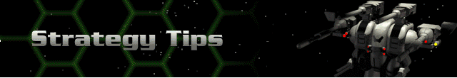

In order to detect hostile forces and facilities during military missions, and in order to detect ore deposits during mining missions, you must be able to view those areas of the map where they are located. In the Herc Bay, outfit a Shadow or Sensei class Herc with the most powerful sensor you can afford, then send that one out first as a scout.
Weapons and devices add encumbrance to a Herc. If you want to move a long distance in the fewest possible turns, don’t overload your Herc. The speed rating shown during Herc management in the Herc Bay will help you evaluate the speed of your Hercs.
Where possible, back up your Herc against a hill and then position your shields toward the exposed sides for maximum protection. Keep in mind that only very tall hills will totally obscure you from fire.
As a general rule, terrain is VERY useful. Use hills and canyons to your advantage.
Don’t load a Herc with all energy or ELF weapons if it can be avoided. Because both of these weapon categories run off battery power, the Herc’s battery will drain well before all rounds are fired in any given turn. Combine energy attacks with missile and cannon weapons for a more potent delivery package.
Use Jackup Stimgland to increase a Bioderm’s skill ratings, especially if you can only maneuver its Herc to within a medium or long range shot. This will improve its hit chances.
Focus the firepower of multiple Hercs on a single target. It is better to eliminate a single target than to damage several.
Destroy smaller Cybrids first as they contain almost as much firepower, but are much easier to destroy. Once the Spectres and Parasites are destroyed, concentrate on the bigger Cybrids.
Keep your Hercs together not only to combine firepower, but to allow stronger ones to shield weaker ones from enemy fire.
Always equip your hercs for the mission. If you are going mining, be sure you have sufficient ore extractors. If you are going to a planet where autocannons won’t work, sell them and purchase weapons that will function. Pay close attention to the planetary gravity and EMF field before selecting your force.
Never be afraid to sell your hercs off and buy new ones. You get full credit for your used equipment.
Always train your bioderms in the VREC. It is VERY cost effective.
Upgrade your equipment as it becomes available from rank advancements. The higher rank equipment is MUCH more potent.
Early in your career, select bioderms with good longevity and train them to maximum levels. This will give you VERY effective ‘derms later in the game.
Don’t rush... there is no time limit (except for each turn on multiplayer games). Take your time and think through your moves. Don’t always move to the limit for each herc’s reactor... move slowly and with more reserve power to allow return fire and to avoid an ambush.
The Reaper and Juggernaut are VERY powerful. Buy one as soon as you are given the chance... you won’t be sorry.
The Cybrids are fast. You can be faster. Use Anti-gravity and Overdrive systems (once available) to increase the speed of your hercs. Being able to run when necessary may be the difference between life and death.